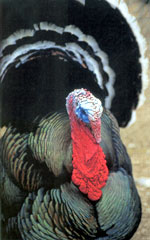
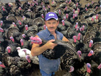
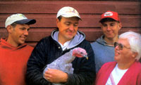
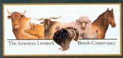
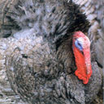
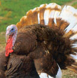

Saving Rare Breeds
Join the Real Food Revival and you can help save endangered livestock.
By Nancy Smith
February/March 2004
Increasingly, consumers are seeking alternatives to factory farmed products; a growing number of us want more flavor and substance in our food, humane treatment for the livestock and less environmental damage from huge animal confinement operations. Dedicated livestock breeders are rising to meet this challenge, in part by raising historic breeds. These rare, often endangered, animals were bred for different regional environments and taste preferences over many generations, but in recent years, they have been all but abandoned in favor of the few breeds agribusiness promotes. Historic breeds may not be as "efficient" as their industrial counterparts, but the animals are often healthier and more interesting to keep; their meat, milk or eggs are more flavorful, and their genetic diversity is vital to our food security.
When it comes to rainbows, Frank Reese, Jr. will take a double every time. But his rainbows aren't the kind that arc across the sky after a storm. Instead, they're a particular coppery sheen on the tail feathers of his prized Bronze turkeys, a heritage variety currently making a fourth-quarter comeback from the brink of extinction.
"I hatched 5,000 turkeys to get that color," Reese says, showing off some of his best Bronze toms. "That's why it's so tremendous to finally find a market for them, so we can now raise more." The Reese operation, in Lindsborg, Kansas, is called Good Shepherd Turkey Ranch.
It isn't rainbows that sell the birds, though. It's taste. Recently, Reese sent a 17-pound turkey to a curious New York chef, to introduce yet another person to the taste of heritage birds. "At that size," Reese says, "they're starting to have a breast, and a layer of fat for flavor. That's where the flavor comes from, the fat.
"And that turkey ran free, to forage as well as eat certified organic grain. That makes a difference. Commercial turkeys never experience the out-of-doors. They're despurred and debeaked, but because of crowding and other stresses, they still find ways to harm each other. It shows in the quality of their meat."
New York Times food writer Marian Burros trumpeted the flavor of heritage turkeys - some of which were Reese's birds - in a November 2001 story. She described the taste as "the essence of turkey" and the meat as "much juicier" than industrial birds. "The heritage birds also have texture," she wrote, "not as in tough but as in firm. The meat does not fall apart in your mouth."
(Here at Mother Earth News, we roasted one of Reese's 8 1/2-pound Narragansett turkeys for a taste test, and although this bird was smaller than he recommends for full flavor, it tasted very flavorful and juicy to us, and it had the same firm texture Burros described in her piece.)
That New York Times story - and the birds' subsequent popularity with members of Slow Food USA, an organization of food lovers across the country attempting to connect "ecology and gastronomy" accelerated a wave of attention launched in 1987 by the American Livestock Breeds Conservancy (ALBC), a nonprofit conservation organization headquartered in Pittsboro, North Carolina. (See "How You Can Help," below.)
In 2000, the conservancy became the first U.S. recipient of the Slow Food biodiversity award. The ALBC's executive director at that time, Don Bixby, nominated four traditional American heritage turkeys - Bronze, Narragansett, Bourbon Red and Jersey Buff - to Slow Food's Ark USA, a program that seeks out and promotes endangered regional foods.
The Bronze was nominated because of its identity with Thanksgiving. The Narragansett, named after Narragansett Bay in Rhode Island, was the first turkey variety developed in the United States. The Bourbon Red was developed in and named after Bourbon County, Kentucky; the rich red color of its plumage resembles the whiskey for which that county is better recognized. The Jersey Buff was a mid-20th century product of New Jersey. In 2001, these four varieties of heritage turkeys officially "boarded" the Ark USA.
"All were commercially viable until the turkey industry moved indoors in the 1960s, and the industry switched to Broad Breasted White turkeys," says Bixby, now technical program director of the Conservancy. Today, Reese of Good Shepherd Turkey Ranch is looking for growers to help him raise enough heritage turkeys to meet the demand for the birds he can now sell at $4 a pound, and other people who raise old-time turkeys are revving up their operations, too.
The dramatic increase in the popularity of heritage turkeys among consumers is only one of the latest developments in a 27-year effort to conserve a number of endangered livestock and poultry breeds. The ALBC has led the movement, supported by private breeders such as Reese and Glenn Drowns of Calamus, Iowa, who focuses on the preservation of poultry, including turkeys, through his Sand Hill Preservation Center.
Censuses taken in 1997 and 2003 have helped measure how threatened particular turkey varieties and other kinds of poultry are. Depending on the numbers, poultry are assigned a status ranging from "critical," (fewer than 500 breeding birds identified in North America) to "recovering," (breeds once listed as critical and now having more than 5,000 breeding birds in North America, but still in need of monitoring). Most of the turkey varieties remain on the critical list, although the numbers of some varieties are up significantly. As a species, the breeding population has increased threefold in the past five years, from 1,335 to 4,275, according to Marjorie Bender, the Conservancy's research and technical program manager. In a recently concluded Conservancy-sponsored research project, heritage turkeys showed better disease resistance and health than industrial strains under range conditions.
Focusing on their success stories with the buying public, the Conservancy organized a marketing convention last fall in Wichita, Kansas. During the three-day event, much of the discussion centered on the story of the turkeys, although the marketing techniques and successes of heritage pork producers Jennifer Small and Mike Yezzi, and heritage beef producer Karen Thornton were chronicled, too. Small and Yezzi raise Large Blacks, Gloucestershire Old Spots and Tamworths on their Flying Pigs Farm in Shushan, New York, and Thornton raises Galloway cattle at Mount Vernon, Iowa. Ancient White Park cattle breeders Wes Henthorne of B Bar Ranch & Livestock in Big Timber, Montana, and Kent Whealy of Seed Savers Exchange in Decorah, Iowa, also attended, having raised enough of their legendary white, horned cattle over the past 20 years to be in search of a market for their stock.
The Conservancy's Bender says the organization is in transition now, thanks to its successes to date. "We've gone from encouraging people to just raise these animals to helping them learn how to market them after they've raised them. And, to not burn out in the process."
She says Drowns and Reese "exemplify the depth of knowledge, passion and commitment to conservation found in the best stewards.
"They understand the importance of genetic conservation for the future viability of agriculture. Drowns is committed to maintaining and distributing the broad biodiversity expressed in endangered poultry and heirloom vegetables. Reese is committed to carrying forward the beautiful, delicious and productive Bronze turkeys."
Glenn Drowns and the Sand Hill Preservation Center
Drowns says as a child he kept ducks and chickens because he wanted to grow things. "It worried me when certain songbirds didn't come back," he adds. "I learned about the dodo birds and the Labrador ducks becoming extinct, too. I was eight, and a real nut case, when I got my first birds - four little ducklings." Back then, Drowns says, he didn't know what a purebred bird was or that they could be mail-ordered from commercial hatcheries. It didn't take him long to find out, though, or to launch himself, while still a teenager, into his own hatchery enterprise, funded by lawn-mowing money. He bought a 250-egg incubator followed quickly by a 600-egg machine. Selling chicks locally, Drowns put himself through college. When he graduated in 1984 from Lewis-Clark State College, Lewiston, Idaho, he sold his incubator and chickens and moved to Iowa to take a part-time job cataloging the Withee Heirloom Bean Collection at Seed Savers Exchange in Decorah.
After buying his farm near Calamus in the fall of 1988, Drowns started keeping poultry again - and collecting rare breeds when he realized their numbers had dropped markedly since his Idaho hatchery days. "When I started looking, I couldn't find any of these turkeys," Drowns says. "I found dead people, but no turkeys. People would tell me, 'I wish you'd called last year, before Grandpa died.' It took me five or six years just to locate and establish these breeds." The experience, he says, made him obsessive. "I felt if I didn't try to save a bird, in 10 years it wouldn't be there."
Today, his turkey collection includes 15 varieties - from Black Spanish and Blue Slate to Jersey Buff, Lilac and White Holland; his Bronzes are the Wishard strain, known for hardiness and developed by Wish Poultry in Oregon.
In addition to the turkeys, Drowns says, "We have 235 breeds of chickens, ducks, geese and guineas and a few quail." His wife, Linda, adds, "And all he wanted was three breeds of ducks and a few chickens." It takes him, or his sons, 5 1/2 hours a day just to feed and water all the birds; Linda handles the catalog paperwork; during hatching season, from April through October, the family's workload escalates dramatically.
The rare breeds hatchery business has challenged them, Drowns says. "I don't like to look at us as a business. I wish there was somebody out there like Bill Gates (of Microsoft) to help with expenses." Overall, though, his concern is the preservation of the poultrys' genetics - precisely what made him obsessive about collecting his breeder birds in the first place. "What's in these chickens and turkeys that we'll need in 10 years?" he asks. "Diversity to me is the only way that the planet is going to survive."
Although he and turkey breeder Reese have met only once, they both work regularly with the Conservancy on turkey research projects and workshops, and both are among recipients of the organization's prestigious Bixby-Sponenberg Breed Conservation Award.
The 50-year-old Reese, a nurse anesthetist, and his elegant, curious, rainbowed Bronze turkeys, live on the 100-year-old family farmstead southwest of Lindsborg, Kansas. He's kept and shown his own purebred birds since 1958, when he was just 5 years old, following in the footsteps of his father, grandmother and great-grandmother before him. He's also benefited from other knowledgeable mentors along the way, including the late Norm Kardosh, whose line of Bronze turkeys Reese now maintains at Good Shepherd Turkey Ranch.
In Kansas, for years, Reese found only a small market for his birds, selling to other private growers and a few consumers at holiday time, but since the appearance of Burros' New York Times story, which reported on the birds' link with Slow Food USA, he's been delighted and challenged to keep up with a new and dizzying pace, and to keep his prices high enough to be fiscally sound. The new market, he says, is mostly individuals who are food lovers or food professionals nationwide who have tapped into his taste treat via Slow Food USA, although interest has begun to spread to other sales outlets, too.
Yet while consumer demand for heritage turkey is increasing, the number of breeders like Reese and commercial hatcheries that maintain breeding flocks and sell to the public, is down. Of the 52 breeders surveyed in 2003 by the Conservancy, Bender says, 20 sell turkeys but only eight maintain breeding stock. Also, since the 1997 census, nearly a third of the 25 hatcheries surveyed then have gone out of business or have stopped raising or selling turkeys. Drowns' Sand Hill Preservation Center does sell to the public but only has a limited number of poults each year. Reese says he won't even sell poults; instead, he prefers to grow them all to maturity, so he can judge their quality before parting with them. A very experienced breeder might convince him to sell an older bird or two now and then, for a price. Just to have enough of a selection to fill his holiday orders with quality birds and ensure more in the pipeline for future years, Reese raised twice as many birds last year - 3,000 - as he did in 2002. "That's a lot of eggs to gather, set and hatch," he says. But, he's smiling as he speaks, and keeping up with demand.
Back to the Future
Efforts to encourage more sales of heritage birds will not be enough to guarantee their survival, Reese says, if more growers don't select only the best birds for their breeding flocks. "If we're going to really market these birds, we have to do like they did in the 1920s and '30s," he says. "We can't just depend on raising `a turkey' or `a Bourbon Red.' We have to select, and learn how to select not only for the standard but for eating." Breed standards are on file with the American Poultry Association, of which Reese is a member and judge; for turkeys, they dictate color and conformation requirements for a bird to be recognized as one of a particular variety.
Last fall, Reese said he planned to keep back 500 of his best birds: 300 Bronzes, 100 Narragansetts and 100 Bourbon Reds. From these he will select the top 30 Bronze toms and the top 20 Narragansett toms and 20 Bourbon Red toms to be his 2004 breeders.
The Bronzes are still the best and one of the hardiest varieties of standard turkeys, Reese says, and his Kardosh strain is the only original standard bloodline left in the world. "None of the others have been bred for proper color and meat quality through the years."
For 50 years, Reese says, the main market for heritage breeds was hobbyists - people who just wanted a few birds on display in their back yard. As a consequence, no rigorous selection was done. "Now," he says, "we have to breed for good breast meat, too."
To help interested growers learn how, he's teaching in-depth Conservancy-sponsored workshops. Knowledgeable consumers, he says, are willing to pay a big premium for heritage, free-range meat; while he sells his dressed birds for $4 a pound, a supermarket turkey may cost as little as 29 cents a pound. Those in the know understand the difference between the two products; they prefer the heritage flavor, and the opportunity to vote with their buying power for the preservation and humane treatment of the animals.
How You Can Help
If you want to learn how to preserve rare livestock breeds on your homestead, you should join the American Livestock Breeds Conservancy (ALBC) in Pittsboro, North Carolina. And if you want to help but can't raise animals yourself, you can make a donation to support the work of this nonprofit group.
When the Standard Went out the Door
|
 DAVID CAVAGNARO Choose heritage turkeys to help save endangered livestock and support local farmers. |
 Rich Sugg/Kansas City Star Frank Reese, Jr., surrounded by his heritage turkeys, curious animals that are imposing, but docile in flocks. |
 DAVID CAVAGNARO Nick, Glenn, Cory and Linda Drowns admire a Blue Slate turkey at their Sand Hill Preservation Center near Calamus, Iowa. |
|
 COURTESY ALBC Learn how you can preserve rare livestock breeds on your homestead by joining the American Livestock Breeds Conservancy. |
 DAVID CAVAGNARO Blue Slate at Sand Hill Preservation Center. |
 DAVID CAVAGNARO Narragansett at Sand Hill. |
|
 DAVID CAVAGNARO Bourbon Red at Sand Hill |
 DAVID CAVAGNARO Belted Galloways are rugged cattle known for their abilities to forage and to withstand harsh winter condistions; they're a focus of the American Livestock Breeds Conservancy efforts, too. These Belted Galloways are owned by Karen and John Thornton of Big Creek Farms, Mount Vernon, Iowa. Karen is an ALBC board member. |
|